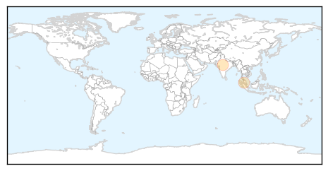

Cholera
30-Day Web Trend
1 alerts, 0 warnings

30-Day Twitter Trend
0 alerts, 0 warnings
Article Locations
Article Confidences

Top Articles:
- 0.998
- Haiti to launch cholera vaccination with PAHO/WHO support
- 0.997
- Haiti to Launch Cholera Vaccination Push
- 0.997
- Haiti to launch cholera vaccination with PAHO/WHO support - Haiti
- 0.932
- South Sudan: Cholera threatens lives of thousands during harsh rainy season
- 0.931
- South Sudan: Cholera threatens lives of thousands during harsh rainy season
- 0.929
- West and Central Africa Region Weekly Regional Humanitarian Snapshot (17 - 22 July 2014) - Nigeria
- 0.922
- South Sudan: Cholera threatens lives of thousands during harsh rainy season
- 0.921
- ICRC : South Sudan: Cholera threatens lives of thousands during harsh rainy season
- 0.573
- Cholera in South Sudan Situation Report # 65 as at 23:59 Hours, 19 July 2014 - South Sudan
Top Tweets:
-
No tweets found for Jul 23, 2014
Dengue Fever
30-Day Web Trend
5 alerts, 9 warnings

30-Day Twitter Trend
3 alerts, 0 warnings

Article Locations
Article Confidences

Top Articles:
Top Tweets:
-
No tweets found for Jul 23, 2014